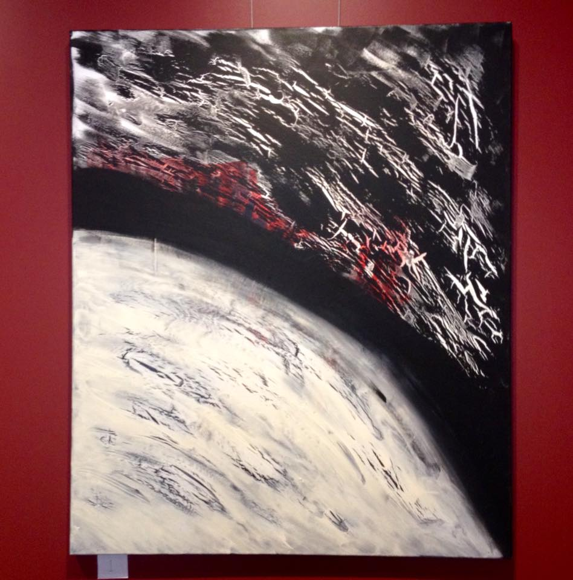
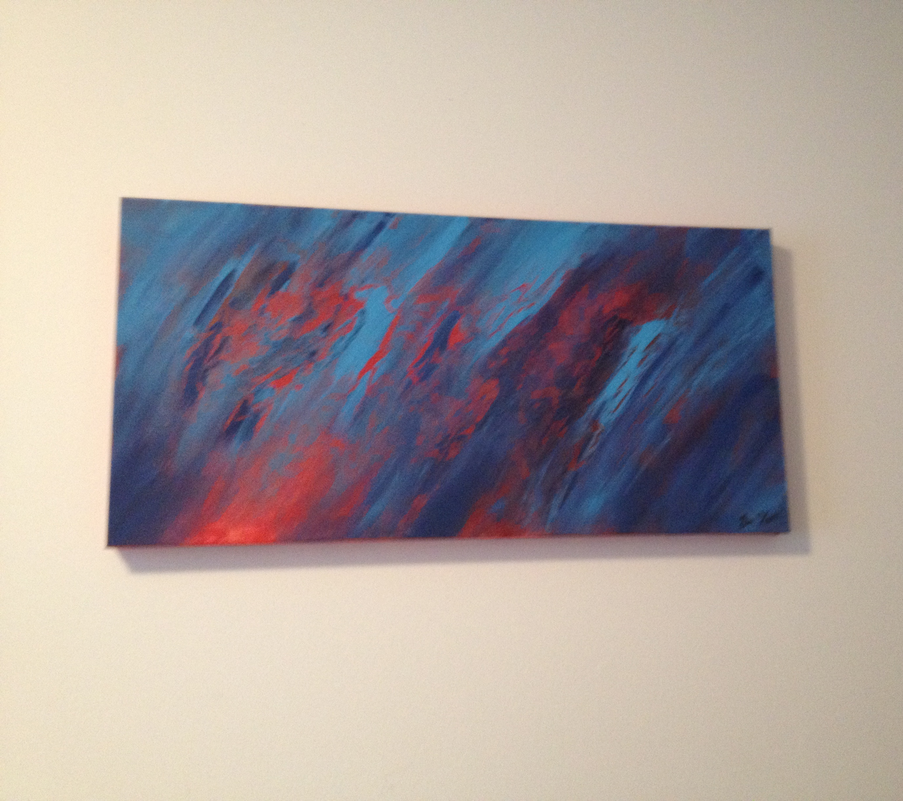
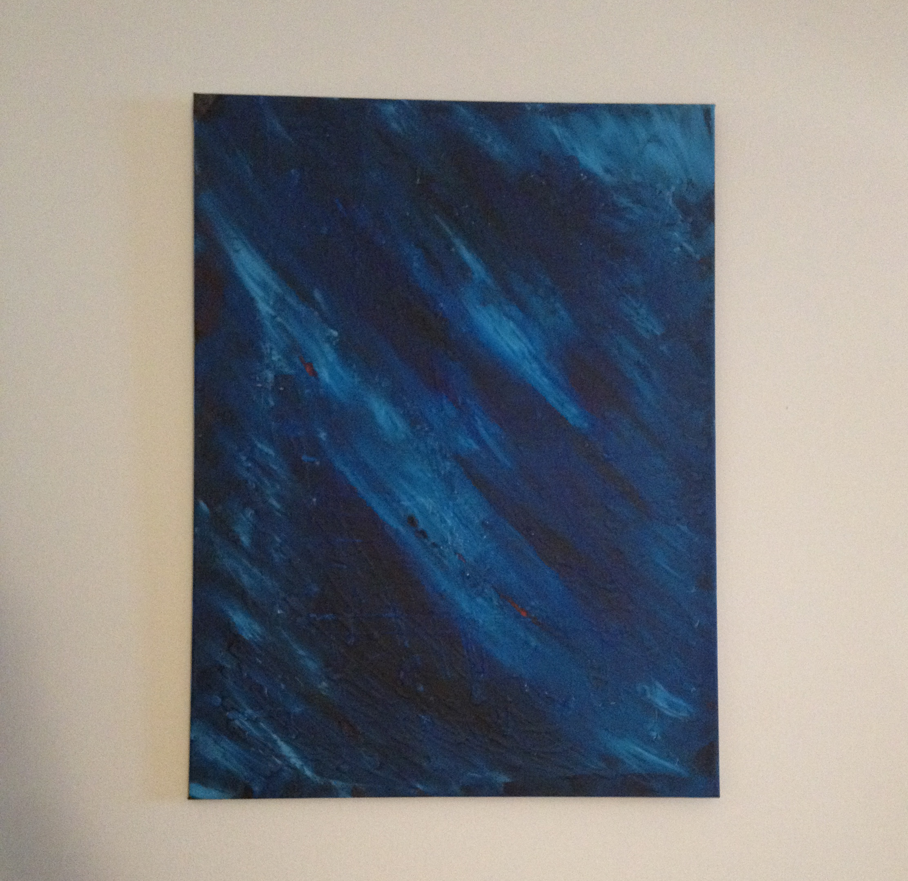
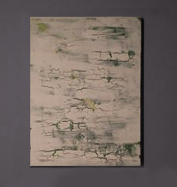
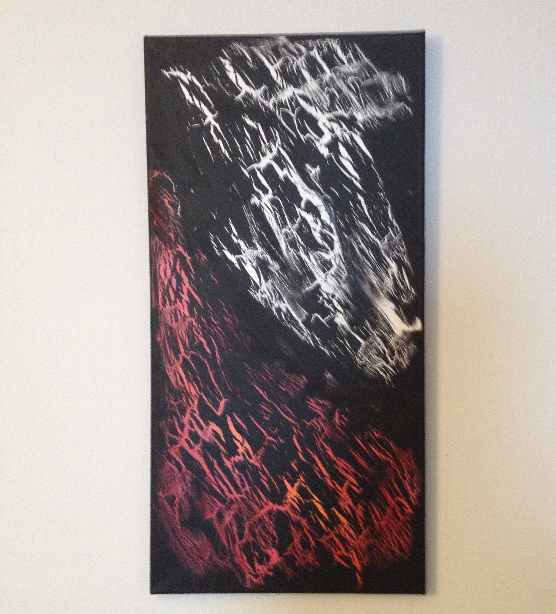
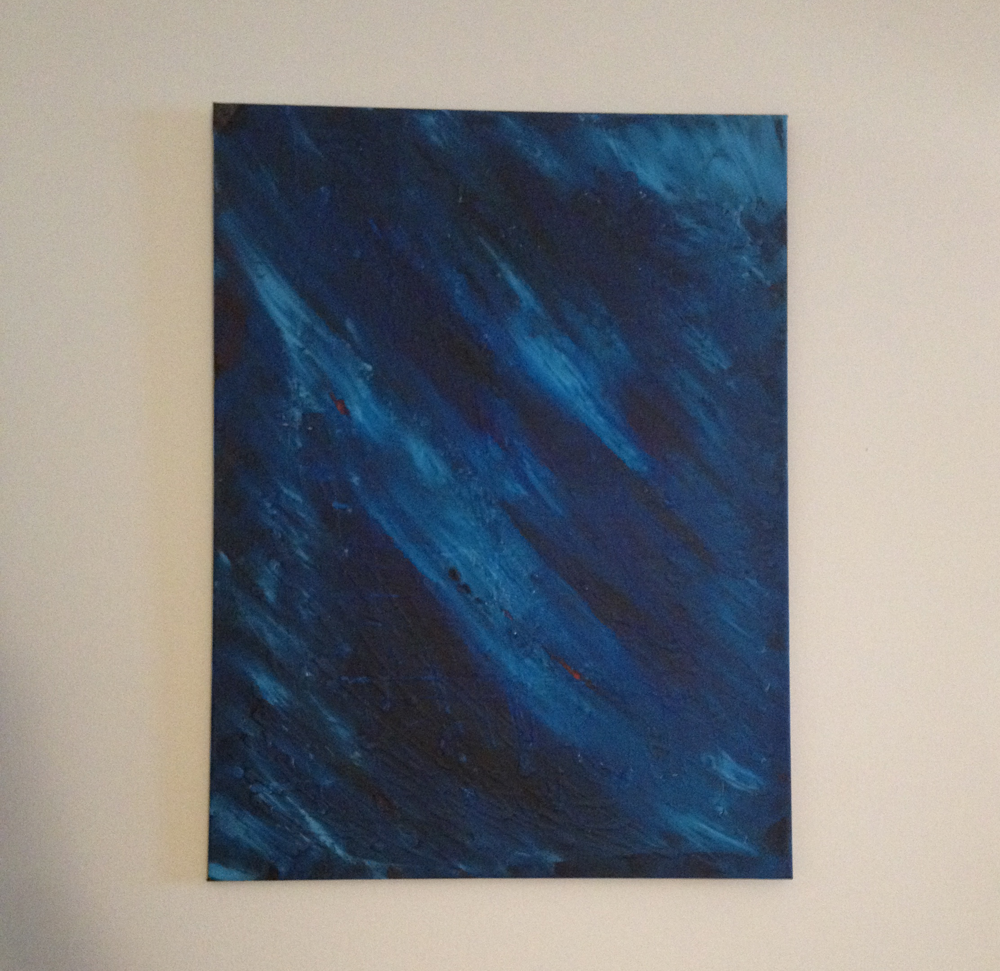
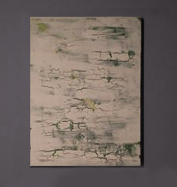
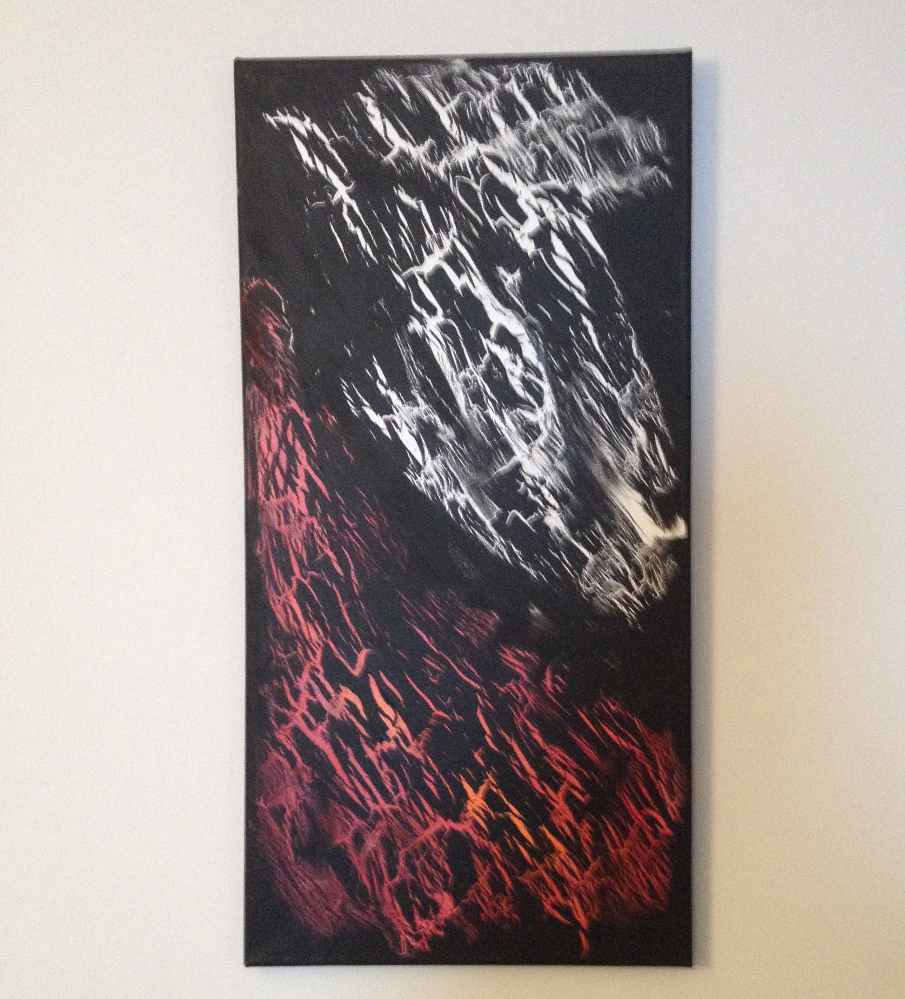

About

My name is Brandi May
I am an English tutor, artist and graduate student. I am passionate about many things, which include teaching, painting and research.
I currently hold a double honours BA from Wilfrid Laurier University in Psychology; religion and culture and am currently working towards obtaining my MA in religion and culture. My training at Wilfrid Laurier University has allowed me to do two very important things.
1. I have been able to conduct rigorous, inter-disciplinary research in accordance with the standards for excellence, in which Wilfrid Laurier University espouses.
2. During the last three years, my training has allowed me the pleasure of helping others help themselves through tutoring English.
The newest of all of my ventures is visual art. As part of my mental and spritual growth, I have found an outlet that has given me much insight into my own imagination. I am an abstract painter and typically use acrylic, but have recently started some mixed-media work. If you would like to learn more, visit the “art” section of my website.
Art


  
I have been painting for a few years now and although I am still a novice, I have a great deal of passion for creating. To express my love for art, I decided to join the Cambridge Arts Festival in 2015 and will be doing so again this year.
All of my art is abstract and all of it has been inspired by my interactions with the world around me. Most of my work has elements of nature in it, although some of it is purely emotional (often, it’s a bit of both). To share my art is to share a little bit of myself.
To share them with you is a chance to connect with you; what a wonderful opportunity that is! My creations may not connect with everyone, but to have the chance to have even a momentary relation with one person that enjoys what I have made, makes doing it worthwile.
  